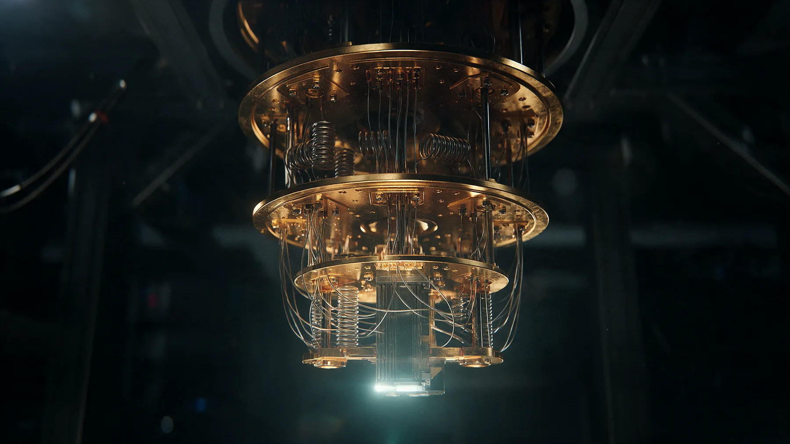
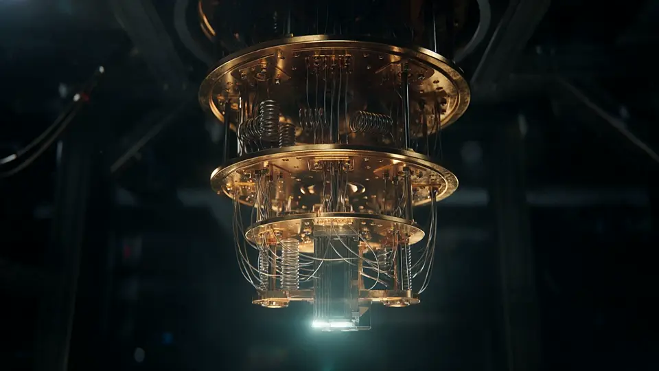
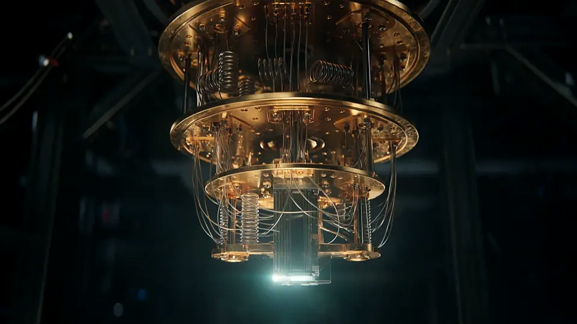
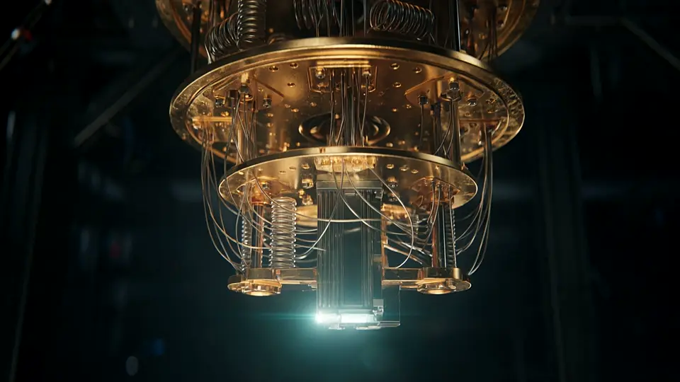
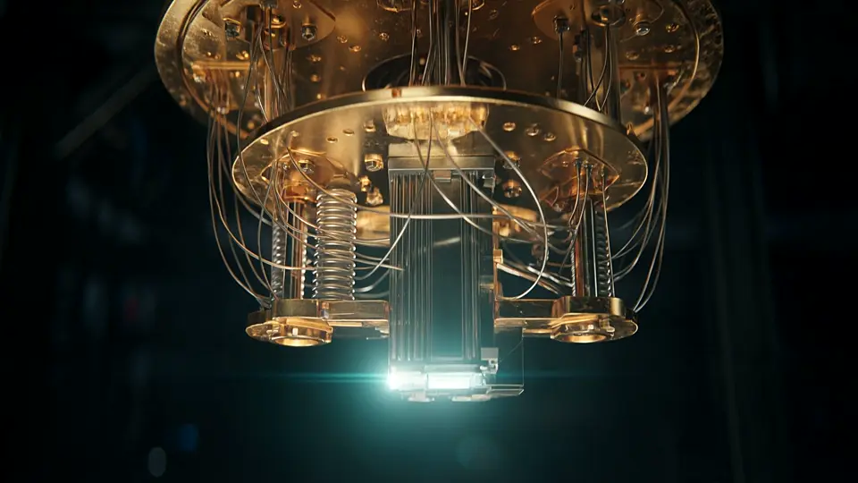
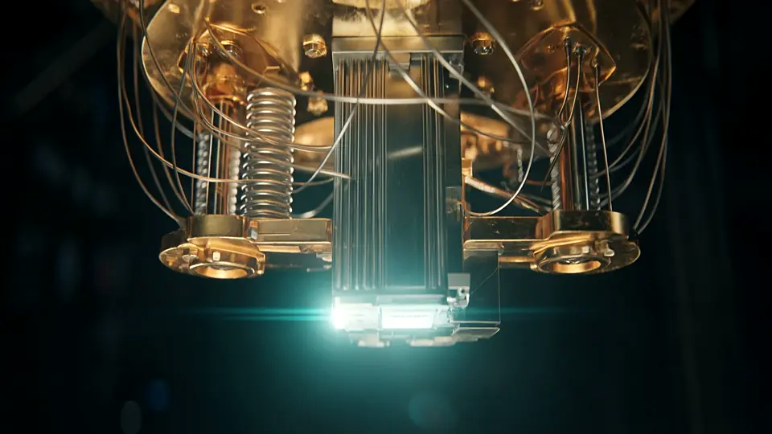
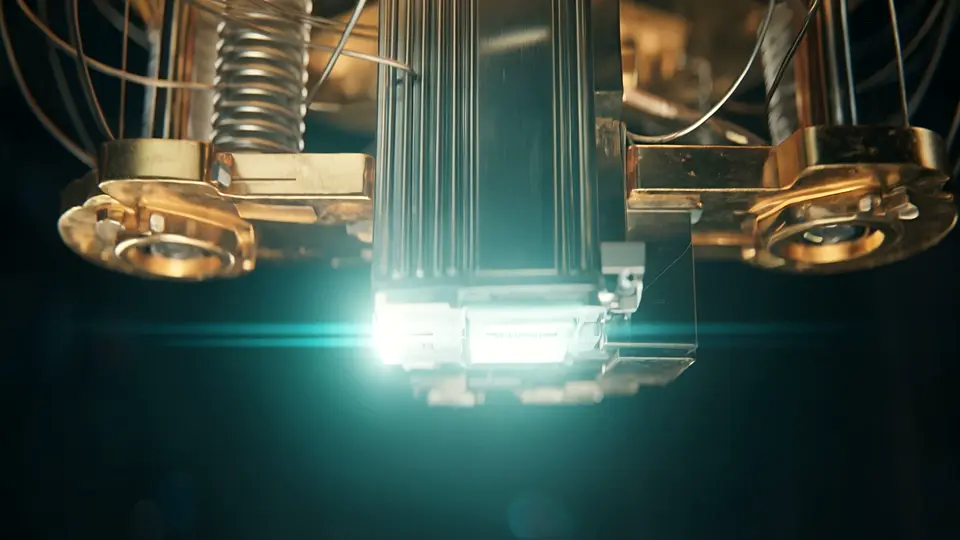
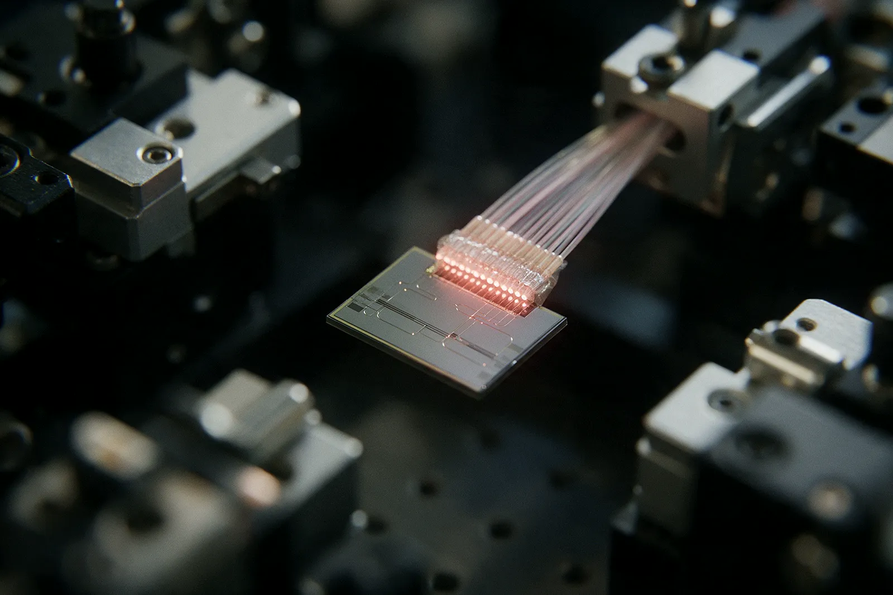

Seis etapas de frío entre la sala y el procesador.
Una computadora cuántica superconductora no se parece a un servidor. Se parece
a una planta criogénica: placas de cobre colgadas unas de otras, cada una más fría que
la de arriba, y el procesador en el último piso.
El aparato que consigue ese frío se llama refrigerador de dilución y no usa ningún
truco electrónico. Aprovecha una propiedad de la mezcla de helio-3 y helio-4: por
debajo de unos 870 mK se separa sola en dos fases, una
concentrada, casi todo ³He, y otra diluida, que retiene alrededor de un
6,6 % de ³He disuelto en ⁴He. Cuando un átomo de ³He
cruza de la fase concentrada a la diluida, absorbe energía del entorno. Ese paso
endotérmico es lo que enfría, y mientras se bombee ³He de la fase diluida la máquina
enfría en continuo.
El descenso se hace por etapas, y cada una tiene su oficio. En la brida de vacío, a
300 K, entran los cables coaxiales que llevan los pulsos
de control: traen señal, pero también calor y ruido, y hay que atenuarlos en cada piso.
El escudo de 50 K es la primera etapa del tubo de pulsos
y trabaja contra la radiación térmica del exterior. La etapa de
4 K aloja los amplificadores criogénicos de lectura y
precondensa el ³He. En el still, cerca de 800 mK,
se bombea el ³He de la fase diluida para sostener la circulación. La placa de
100 mK monta los intercambiadores a contracorriente. Y en
la cámara de mezcla, a 10 mK, cuelga el chip.

Fig. 8 El aparato entero. Lo que se ve son los escudos térmicos abiertos: cada
cilindro protege del calor al que tiene debajo. El procesador ocupa el último palmo.
Recreación generada con IA a partir de documentación de criostatos comerciales.
En un Bluefors XLD1000-SL cargado con cableado hay unos 30 W disponibles en la
etapa de 50 K y unas decenas de microvatios en la cámara
de mezcla: un factor de un millón entre esa etapa y la última.
Valores tabulados en un sistema cargado con cableado
(arXiv:2502.01945v2).
Solo la cifra de la cámara de mezcla es especificación del fabricante: el
XLD1000sl
garantiza temperatura base de 10 mK, más de
30 µW a 20 mK y más de
1.000 µW a 100 mK.
Brida de vacío
Potencia frigorífica por etapa · Bluefors XLD1000-SL
50 K
~30 W · escudo de radiación, primera etapa del tubo de pulsos
4 K
~0,7 W · amplificadores criogénicos y precondensación del ³He
800 mK
~7 mW · still: bombeo del ³He de la fase diluida
100 mK
~1 mW · intercambiadores a contracorriente
10 mK
>30 µW a 20 mK · cámara de mezcla: aquí va el chip
Fig. 9 Recorrido del criostato. Mueva el mando y baje por las seis etapas
térmicas: la lectura da la temperatura nominal de cada placa y el nombre de la pieza.
El salto difícil no está arriba, sino entre el still y la cámara de mezcla,
donde la potencia disponible cae a microvatios. Al final del recorrido la cámara pasa
por debajo de la placa de mezcla, hasta el portamuestras chapado en oro donde va el chip.
Aquí aparece el problema que manda sobre el diseño. Cada cúbit necesita sus propias
líneas de control y de lectura, y cada línea es un cable que baja desde temperatura
ambiente. Un XLD1000sl admite hasta 1.008 líneas
coaxiales de 18 GHz, y con esa configuración máxima las
cargas térmicas estáticas de los cables consumen el
63,4 % de la potencia disponible en la placa de
100 mK. El cuello de botella no está abajo, donde vive el
chip, sino en esa etapa intermedia: para la arquitectura analizada, los autores
calculan un límite práctico de unos 140 cúbits por
refrigerador. El techo lo fija el cableado, no el procesador.
El insumo tampoco es indiferente. El helio-3 cotiza entre
1.900 y 2.600 USD por
litro a granel, y un XLD1000sl contiene unos 40 litros:
del orden de 100.000 USD solo en gas. Casi todo el
suministro terrestre viene de la desintegración del tritio almacenado en arsenales
nucleares. De ahí que varias líneas persigan cúbits que funcionen por encima de
1 K, donde bastaría helio-4.
Fig. 10 La mitad de la máquina que casi nadie fotografía. Los generadores de
microondas, los conversores y el cableado ocupan más espacio que el criostato, y cada
línea que entra al frío se paga en vatios.
Recreación generada con IA a partir de fotografías de salas de control criogénico.






Fig. 11 Seis de los treinta y seis fotogramas del descenso, de izquierda a
derecha: la cámara pasa del aparato entero a la base del último módulo. Son los mismos
que el sitio usa como respaldo del vídeo de portada cuando el navegador no aguanta el
rebobinado.
Recreación generada con IA a partir de fotografías de criostatos reales.
Seis maneras de sostener un cúbit
No hay tecnología ganadora, y el número de cúbits no sirve para compararlas.
Conviven seis modalidades con compromisos distintos entre velocidad de puerta,
fidelidad, escala y refrigeración. Una advertencia:
6.100 átomos neutros no «superan» a
98 iones atrapados, porque difieren el tiempo de puerta,
la conectividad y la fidelidad. Tampoco conviene redondear: pasar de
99 % a 99,9 % cambia por un
factor grande cuántos cúbits físicos hacen falta por cada cúbit lógico.
Modalidad 1
Superconductores: el transmón
El cúbit es un circuito de aluminio sobre silicio con una unión Josephson, que aísla
dos niveles de energía. Trabajan IBM, Google, Rigetti e IQM; Oxford Quantum Circuits
usa una variante coaxial propia. Opera entre 10 y
20 mK. Tras las calibraciones de
, el error mediano
de puerta de dos cúbits en un dispositivo de clase Heron bajó de unos
5×10⁻³ a unos 3×10⁻³: cerca
de 99,7 % de fidelidad. IBM no publica medianas de
T1 ni T2 para Heron; el
dato comparable es el del
Willow
de Google, con T1 próximos a
100 µs. Ventaja: puertas de decenas de nanosegundos.
Limitación: conectividad entre vecinos y calidad desigual dentro del mismo chip.
Modalidad 2
Iones atrapados: los más precisos
El cúbit es un ion real, suspendido en vacío por campos eléctricos y manipulado con
láseres. El referente publicado es
Helios, de Quantinuum:
98 cúbits de bario-137 con conectividad de todos con
todos. También trabajan IonQ y Alpine Quantum Technologies. No hay dilución, pero
tampoco se prescinde del frío: la cámara se mantiene a unos
15 K y los iones se enfrían por láser. Fidelidades
publicadas: 99,9975 % en un cúbit y
99,921 % en dos. La memoria es su punto fuerte: un ion de
iterbio-171 alcanzó 5.487 ± 668 s de coherencia estimada.
Limitación: las puertas tardan de microsegundos a milisegundos.
Modalidad 3
Átomos neutros: escala con pinzas ópticas
Se atrapan de uno en uno con pinzas ópticas dentro de una cámara de ultraalto vacío
que, por fuera, está a temperatura ambiente; los átomos sí se enfrían por láser hasta
unos pocos microkelvin, y en Infleqtion
reportó 17 µK. Las puertas de dos cúbits excitan los
átomos a estados de Rydberg. Trabajan QuEra, Pasqal, Atom Computing e Infleqtion. La
USTC publicó 99,97 % en un cúbit y
99,84 % en dos;
Caltech
ordenó 6.100 átomos de cesio con unos
13 s de coherencia. Ventaja: escala, y los átomos pueden
moverse durante el cálculo. Limitación: se pierden, y el cálculo es de cien a mil veces
más lento.
Modalidad 4
Fotónica: luz que también necesita frío
Aquí el cúbit no es materia, sino luz. PsiQuantum codifica en cúbits dual-rail:
la información está en por cuál de dos guías de onda viaja el fotón. Xanadu trabaja con
luz comprimida y ha presentado Aurora; también están
Quandela, ORCA Computing y QuiX Quantum. La fotónica no elimina la criogenia: el chip
funciona a temperatura ambiente, pero los
detectores de nanohilo superconductor operan entre 2 y
4 K, y los de borde de transición bajan a unos
50 mK. Lo que se evita es la dilución y el helio-3. El
chipset Omega reporta 99,22 % en la puerta de fusión.
Limitación central: la pérdida de fotones, que se traduce en más cúbits físicos por
cúbit lógico.
Modalidad 5
Espines en silicio: la apuesta CMOS
El cúbit es el espín de un solo electrón confinado en un punto cuántico de unos
50 nanómetros, fabricado en silicio. Si el sustrato se
enriquece en silicio-28, que no tiene espín nuclear, la coherencia pasa de
microsegundos a milisegundos. Trabajan imec con Diraq, Intel —chip Tunnel Falls, de
12 cúbits—, Quantum Motion y SemiQon. Opera entre
10 y 100 mK, con
demostraciones por encima de 1 K que permitirían
crióstatos de solo helio-4. En
imec y Diraq publicaron celdas fabricadas en línea industrial de
300 mm, con más de 99 % de
fidelidad en puertas de uno y dos cúbits. Limitación honesta: los mayores procesadores rondan los
12 cúbits.
Modalidad 6
La vía topológica: disputada
Guardaría la información en propiedades globales de la materia, donde el ruido local no
la borraría. Microsoft presentó Majorana 1 en
: un dispositivo híbrido de arseniuro
de indio y aluminio, operado a temperaturas de milikelvin y con campos magnéticos en el
plano de aproximadamente 2 T. Lo que demostró el artículo
es una medida interferométrica de paridad en un solo disparo, con
1 % de probabilidad de error. Los propios autores
escribieron que sus medidas no determinan por sí solas si los estados detectados son
topológicos, y los editores de Nature recurrieron a dos revisores adicionales. No hay evidencia
pública de coherencia ni de operaciones lógicas.
Tabla 1 — Las seis modalidades, con datos publicados hasta septiembre de 2026
Modalidad
Temperatura de operación
Fidelidad de dos cúbits
Coherencia típica
Limitación principal
Superconductores
10–20 mK, con dilución
≈ 99,7 % (clase Heron, 2024)
T1 ≈ 100 µs (Willow)
Conectividad entre vecinos
Iones atrapados
Cámara a ≈ 15 K, sin dilución
99,921 % (Helios, 2025)
Hasta 5.487 s en un ion aislado
Puertas de µs a ms
Átomos neutros
Cámara ambiente; átomos a ≈ 17 µK
99,84 % (USTC, 2025)
≈ 13 s (Caltech, 6.100 átomos)
Pérdida de átomos; de 100 a 1.000 veces más lento
Fotónica
Chip ambiente; detectores a 2–4 K y ≈ 50 mK
99,22 % (fusión, Omega, 2025)
No comparable: el fotón no almacena
Pérdida de fotones
Espines en silicio
10–100 mK; demostraciones sobre 1 K
> 99 % (imec y Diraq, 2025)
Milisegundos con ²⁸Si enriquecido
Unos 12 cúbits demostrados
Topológica
Milikelvin, campo de ≈ 2 T
Sin dato publicado
Sin dato publicado
Sin evidencia pública de cúbit operativo
Fig. 12 Un procesador superconductor en su portamuestras. El oro no es adorno:
conduce bien el calor y no se oxida, y el montaje sirve a la vez de soporte mecánico y
de camino térmico hacia la placa de mezcla.
Recreación generada con IA a partir de fotografías de chips publicadas por los
fabricantes.

Fig. 13 Un chip fotónico con la fibra pegada al canto. Esa unión es uno de los
puntos donde se pierden fotones, y en esta modalidad cada punto porcentual de pérdida
se paga en cúbits físicos adicionales.
Recreación generada con IA a partir de imágenes de fotónica integrada de silicio.
Cinco términos que conviene no confundir
Transmón
Circuito superconductor con una unión Josephson que se comporta como un átomo
artificial con dos niveles útiles.
QCCD
Arquitectura de iones en la que las cadenas se transportan físicamente entre
zonas de memoria y de operación. Es lo que da conectividad de todos con todos.
SNSPD
Detector de fotón único de nanohilo superconductor. Opera entre
2 y 4 K: la fotónica
evita la dilución, no el frío.
Cúbit lógico
Cúbit codificado en varios físicos para que los errores se detecten y se
corrijan. No es intercambiable con «cúbit físico» en un titular.
Umbral
Punto a partir del cual agrandar el código de corrección reduce el error lógico
en vez de aumentarlo.
Cómo se lee un cúbit
Siete iones, un láser y una cámara que cuenta fotones.
En una trampa de Paul los iones se sostienen en vacío mediante campos eléctricos
oscilantes. Se repelen entre sí y se ordenan solos en una cadena. En Helios esa cadena
vive sobre un anillo de almacenamiento rotatorio de 2,8 mm
de diámetro.
Un láser sintonizado a una transición cerrada baña la cadena. Los iones que están en
|0⟩ dispersan fotones y se ven brillantes; los que están en |1⟩ no responden a esa
frecuencia y quedan oscuros. Así se lee un cúbit de ion atrapado: por fluorescencia,
con una cámara que cuenta luz.
En la pieza de abajo, los dos iones marcados con el corchete rojo están entrelazados:
salen siempre iguales, midas las veces que midas. Los otros cinco caen de forma
independiente. Esa correlación no es un acuerdo previo entre los dos iones —eso es lo
que descartan los experimentos de Bell— y tampoco sirve para enviar información.
Láser apagado: sin medir, no hay resultado.
Fig. 14 Cadena de siete iones de bario en una trampa de Paul. Pulse «Iluminar y
medir»: los iones brillantes son |0⟩ y los oscuros, |1⟩. La lectura da la cadena de
bits resultante. Repita la medida y vigile la pareja del corchete rojo: los dos iones
entrelazados salen siempre iguales, aunque cada uno por separado salga al azar.
Cúbits físicos, cúbits lógicos
Qué se ha demostrado de verdad entre 2023 y 2026.
Un cúbit lógico es un cúbit codificado en varios físicos para que los errores se
detecten y se corrijan. Hay dos regímenes. En detección se descarta la ejecución entera
cuando salta un fallo. En corrección, el fallo se repara y el
cálculo sigue. Confundirlos infla las cifras de cualquier titular.
En Google publicó la primera corrección de errores
por debajo del umbral en un procesador superconductor. Sobre
Willow codificaron un código de superficie de distancia 7 con
101 cúbits físicos y midieron un error lógico de
0,143 % ± 0,003 % por ciclo. La cifra decisiva es otra:
el factor de supresión
Λ = 2,14 ± 0,02.
Al subir la distancia del código de 3 a 5, y de 5 a 7, el error lógico se redujo
aproximadamente a la mitad cada vez. Eso es estar por debajo del umbral: añadir cúbits
mejora el resultado en lugar de empeorarlo. Y hay un freno: sucesos correlacionados del orden
de uno por hora fijan un suelo de error.
En otra plataforma, Bluvstein y colaboradores usaron matrices reconfigurables de hasta
448 átomos neutros y reportaron un rendimiento
2,14(13) veces por debajo del umbral. No es una
repetición del experimento de Google: la coincidencia entre ambos números es casual.
En iones, Helios sostiene 48 cúbits lógicos con
corrección, o 94 globalmente entrelazados en modo de
detección, a partir de 98 físicos. En
el código C₄-Helix bajó a diez
iones por cúbit lógico. Microsoft y Atom Computing crearon
28 cúbits lógicos a partir de
112 físicos, con un esquema que se apoya en detección y
no en corrección completa.
Fig. 15 Un criostato abierto es una máquina de manos. Calibrar, apretar y volver
a cerrar toma días, y cada ciclo de enfriamiento cuesta otro tanto: por eso la
fiabilidad térmica pesa tanto como la fidelidad de las puertas.
Recreación generada con IA a partir de fotografías de laboratorios de criogenia.
Qué significa y qué no «ventaja cuántica»
John Preskill introdujo «supremacía cuántica» en 2012 con un listón modesto: hacer alguna tarea,
aunque fuese inútil, fuera del alcance práctico de lo clásico. «Ventaja cuántica» es el término que usa hoy la industria, y la definición
operativa que IBM publicó en exige dos
cosas a la vez: que la corrección de la salida pueda validarse con rigor, y que exista
una separación que ofrezca de forma demostrable mayor eficiencia, mejor relación
coste-beneficio o mayor precisión que lo alcanzable solo con computación clásica.
De ahí salen tres precisiones. La afirmación es siempre sobre una tarea concreta, nunca
sobre ser más rápido en general. Es empírica y no un teorema: caduca el día que alguien
publica un algoritmo clásico mejor. Y nada exige utilidad. El historial lo confirma:
los 10.000 años que Google estimó en 2019 para simular
Sycamore bajaron a unos 2,5 días en semanas, y en 2022 a
unas 15 horas con 512 GPU.
El paso de es distinto.
Con el algoritmo Quantum Echoes, Google midió un correlador fuera de orden temporal
sobre 65 de sus 105 cúbits
en unas 2 horas, frente a
3,2 años por punto de datos estimados en Frontier. Lo
relevante no es el factor, sino que el resultado es un valor esperado, reproducible en
principio en otro procesador cuántico, y no una distribución imposible de comprobar.
Lo que no significa: que exista una demostración de ventaja sobre un problema de valor
comercial con aceptación general. IBM presentó en
tres trabajos bajo esa etiqueta, pero
solo uno lleva respaldo formal de complejidad computacional. En el registro abierto de
reclamos que IBM mantiene desde finales de 2025, métodos clásicos nuevos resolvieron en
, en horas o segundos, tareas que en
se estimaban en meses. Tampoco hay máquina que amenace hoy a RSA: Gidney estimó en
que factorizar un entero de 2048 bits
exigiría menos de
un millón de cúbits físicos ruidosos, entre tres y cuatro órdenes de magnitud por encima de
los procesadores existentes.
Separata · El antagonista
Acorralado, no eliminado.
El mismo cable que lleva el pulso de control lleva calor y ruido hasta la placa de
mezcla. En Willow, sucesos correlacionados del orden de uno por hora fijan un suelo que
la supresión exponencial no atraviesa. En las pinzas ópticas los átomos se pierden. En
fotónica se pierden los fotones. Ninguna de las seis modalidades ha eliminado el
problema: lo han acorralado, cada una por su lado, y ninguna todavía a la escala que
haría falta.